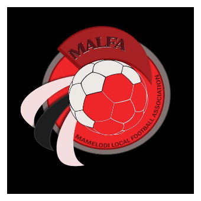

About the association
MALFA
A connected platform for the football community of Mamelodi.

Our role
Organising the local game.
This website brings competition information into one place so players, clubs, supporters and administrators can follow every division clearly.
Platform coverage
Verified results, fixtures, tables, club profiles, news, partners and tournament visibility are all managed from one secure dashboard.